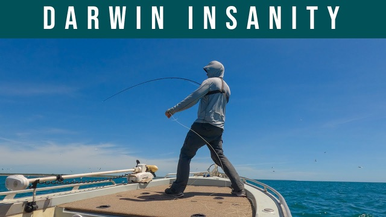

Peachy Fly Fishing
Darwin fly fishing — I wasn't expecting this
Monday 17 July 2023
Peachy Fly Fishing
Monday 17 July 2023


Originally broadcast on Peachy Fly Fishing. Watch on Peachy Fly Fishing.
I was up in Darwin on a work trip for a couple of days, back in April, and considering how rarely I get to target northern tropical species, I was desperate to get out for a fish. A visit to fishing in outdoor world, got me some local info about where I could do a bit of land-based fly fishing for a morning in the city. But despite my best efforts, I wasn't able to find any fish that day.
Fishing up here is highly tide dependent, and local knowledge is really important if you want to have a good chance of success. So I was stoked when on my 2nd day, I was lucky enough to score a spot on the boat with one of Darwin's top guides. Glenn Watt from Barefoot Fishing Safaris. Glenn guides clients on a range of fisheries within a few hours of Darwin.
But because I only had the one day with him to fish, we chose to target Darwin Harbour itself. G'day, guys. I'm up in Darwin today, fishing with Glenn Watt, from Barefoot Fishing Safaris. So I've never fished Darwin Harbour before.
What are we sort of expecting to catch, mate? Well, I wasn't expecting the cold windy conditions for a start, mate. But we'll battle through it. Yeah, we've got a nice runout tide here today, down to about 2.5 metres, so we should be able to find some barr and snapper and maybe a jack dish up around the corner here on the flats and see what happens after that.
Fantastic Looking forward to it. Now, do we want to be right up on the edge, or, uh... Yeah, try to get right up on the milky water there. Yeah, cool.
Quite shallow, gravelly, just there, but they don't mind. And how do you want me to fish it here? Just fairly slow. Lots of pauses.
Slow that, yeah. Darts and stops. Yep. Whoa. Just had a bump.
You didn't need it properly. I just wasn't quite tight to the fly, then. Just had a bit of a bow in the line, and it didn't quite get tension on him when he ate it. Just try and lengthen his strips, and then go slower, just go...
Yep. And if you do get a tap, you sort of always hold onto it. And a longer pause. Um, yeah, it doesn't look paws probably...
So more like that? slow. Ooh. I'm not sure if that was bottom or if that was a take.
Kind of felt like it could have been a bar of take. That's sort of long sucking kind of thing. So, with this sort of stuff, do you want me to sort of sink it down along the tree? Yeah. Yeah.
Like, it's only, um, knee deep in there anyway, you know? Yeah, right. Get further in than that? No, no, that's fine. See this dead branch, it's going into the water there, or... Oh, yeah.
All around, sort of. Yeah. Oh. Missed him.
Ooh. Might have had a bump, then. So, what do you reckon the fish are sort of doing at this stage of the tide? Oh, they've been moving around a bit.
Yep. Particularly the barrel, they start cruising around. Mm hmm. They got forced out of their high tide spot.
Yep. By moving up and down the banks till they find a drain, they want to sit in. Yep. Does this tree on the corner produce?
Yeah, and there's little mangroves around it. Yep. Yeah, these aerial roots sort of stalking you? I mean, we got...
Yeah. That would be a shot to all one ear. Yeah. Oh, it's had a bump.
Just a very gentle little tap. You know what that was, maybe a finger mark or something? Yeah, it was all, like, snapping around the creeks, and, um, trees in the creeks. Yep.
Almost felt like a brim bite that. Do you get pikes up here? Yeah. A bit of disturbance up in there.
Yeah, yeah, yeah. Thanks, boy. Little baby. Brimming.
Yep. Yeah. Yeah, you really ate it. Might need the pliers for that, mate.
Not the biggest prim in the harbour either. Come all the way to Darwin to catch a breath. Yeah, yeah. I reckon these northern ones are a lot more aggressive than the yellow fin.
Well, the fish don't seem to be happy, do they? What do you like best in terms of tides? Oh, these guys are great. Yeah?
Yeah, two metre low. Yep. Middle of the day, so you get a lot running out all morning. Yeah, we'll go for a scoot across another section of the harbour, I think. OK.
Ooh, something on the edge there. What's that? Something moved a bit of water up in there. Yeah.
That's Sabara? Yeah. You gonna make this net look big? Simone was with him, too.
Actually, you gonna go? Yeah. He caught the smallest one in the harbour. Hold to start.
Still, man. We found a busy one at least. . Very nice. He's only a tiny one.
But... that's all right. Nice. All right. Hanging around here and there with those queenies and Trevor.
Yeah, well, there was another fish with him. At one point when he came up. Oh, you followed him around. Yeah, following around.
Yeah. I forgot what this is yet. But it feels like it might be another bearer. Oh, that's cod.
Gold spot estry, cod? Oh, look at that big... It's got a great big sea lice on him. Look at that.
Lovely. Or else. Yeah. Yep.
Oh. Bugger. pulled the hooks. Felt like a slightly better fish, that one.
That's better. Yeah. Another thing. Yeah, it's Lola.
I wonder if that's what the school is that's swimming around down there. So do you see them tailing up in this? Uh, usually it's cruising along. It's cruising, yeah.
Yeah, like, it's sort of... It's sort of beeps pretty fast. Yep. Where is he? Rip along the surface, right now?
Not behind him or...? Oh, yeah. Oh, yeah. There he is. What's that guy about where you rolled the point?
Oh, yeah. You moving quick. Yeah. Didn't quite... get him?
He's still moving. I can still see him. Just over there now. great at it.
Yep, yep. I think he knows we're here. Mostly have it, eh? All right.
What are you, like, a roly poly for these, or just a fast trip? Yeah. If you figure out there's natural here, then you want to be going super fast. Yeah, right?
It's a whole bunch, sort of, further out. Yeah, they're busting now. All right. Have I?
Yeah. What have we got here? Please. Yeah, I think it's corny.
Oh, what's that? There's something huge there. Here they come. Get him in quick.
Yeah. Pasta. Oh. Nice. There we go.
Little crainy. Unreal, these things. Oh, yeah, I mean, they're the best. They're the best fish for clients to catch.
Yeah, yeah. Especially kind of time, isn't it? Yeah. Oh, that hard.
Yeah. Yeah. That was a better one too. Yeah.
Yeah. Oh, this one is just a little one. We've sort of drifted off them a little bit now. Yeah, mate, I wish we had queenfish in Sydney.
They're unreal. Do you get long tiles at this time of year? Uh, not often this early. I'm sure, I've seen a couple of big blue backs in there. Yeah.
Oh, here they are right beside us. Come on, eat it. Yeah. That's a better one, I think.
Oh. Yeah. This might be a slightly better one. You had me in the backing.
That's a good fish. Yeah. He's still pretty green. But I don't want to leave him in for too long.
All right. . There we go. Rolling, Randall, tile in, do you? Right.
Yes. That's a proper one. Yeah, that's a proper one. There he is, guys.
That's a good queenie. Oh, beautiful. Thank you, mate. All right.
Back he goes. It's easier when we fix do what we want them to do, isn't it? Yeah, I reckon. He put a good bend in the rod?
Yeah. That made my dough, mate. That's gonna clean your hardness. Yeah.
No, mentally, yeah. Oh, no, you ready? Yeah. How did that not get eaten?
Yeah. Looks like there's a big travelly or something in there. Yeah, I thought it was... See, there's a lot of them around.
Oh, right, look at that. Dropped him, had the line wrapped. That's all right. There's some big stuff in there.
Is another good one? Love the way they jump. Oh, well into the backing now. Jesus.
Ease off. There goes the sport. Hello. Lucky he didn't fall over the side.
It's got a lot of line out. Hey, solid one? Another good one. Good job.
Whew Mate, how good fun is this? There is all day, can't you? They're unreal, mate. Unreal.
Yeah. Yep. Here we are, guys. We got a photo of the other number one. I don't think we'll bother with this one.
It's pretty similar. There we goes. And he's off. Whew.
Got my drag done up too tight now. I can't strip line off. Might be a little bit too close to the sharks here. I don't like the chances of one if I hook him.
Big shark. Everywhere. Probably half a dozen, half a dozen fair sized sharks around the boat. Oh, right here.
Yep. There we go. It's just going nuts, yeah? That's a good jump.
9.5 out of ten? Beautiful. All right. Just getting back in quick, I reckon.
I'll get back in there. Yeah. Oh. He's off. I got... Yeah. No, he's on. Oh, they're in the front of you.
Got to ram my leg. Yeah. Far off, did he? Huh? What half dozen pass in the surface? I got the good old, uh, real handle to the thumbnail.
Yeah. Yeah. Here's the shark on his tile. Incoming. Oh, muscling.
Hello, you're bringing in? Jesus, this girl. Oh, God. Yeah. Yes.
Oh. All right. Good job, little Bluey. Nice. Fantastic.
Thank you, sir. I reckon. Johnny. I reckon that'll do me, mate.
Come on out, are you? Yeah, old plum's getting a bit sore from whining. Yeah, so many, I'm in there. Oh, it's nuts.
It's unreal. Mate. What a fantastic day. No problem at all, mate.
Thank you, bud. So, uh, beyond some fish that we're gonna play the game for. Yeah, yeah, the Queenies, the Queenies sort of saved the day, didn't they? Yeah, they did.
Yeah. But yeah, what a fantastic fishery. Like, I just... I'm really impressed with Darwin Harbour, you know? It's beautiful.
It's great, and it's huge, and you know, you've got all different species. It's easy to catch 10 different species, and Qantas planes are flying over our head at the same time, you know, and we can see the pub, so... It's all good around here. It's pretty bloody good, isn't it? And, you know, if people want to come up and fish with you.
Is there a best time of year, a prime time of year to come? Yeah, we take a wet season off just because of the weather, but any other time, say, from late February, right through until mid-December or early December is going to be best. Obviously, dry season's really popular with people from down south, get up into some nice weather, and that's when these particular spots go really, really well. You know, we get some nice flat days, clean water and the pelagics are in here in big numbers.
Yeah, yeah, it's a great time. Yeah, no, this is this is awesome. And, you know, some people would say we're mad to leave fish biting like this, but mate, I've had a fantastic day and, you know, I'm ready to go and relax and have a swim and have a nice cold one. Yeah, I think I'm going to do this.
Yeah, yeah. give that little bit of a Band-Aid on the thumb there. I got the old real handle trick from the Queenie, which was good. Yeah.
Anyway, brilliant, mate. Thank you so much. Where can people find you? Oh, search up Barefoot Fishing Safaris anywhere?